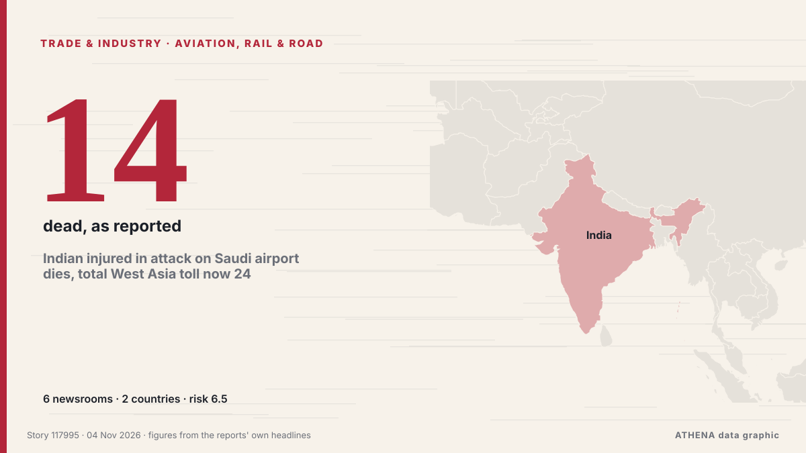

Aérien, rail et route
SponsoriséPrésenté par  Cybernetics and Artificial Intelligence Lab Welcome to the Cybernetics and Artificial Intelligence Laboratory, established at the Department of Business Administration of the National and Kapodistrian University of Athens. The lab is headed by Professor Dimitrios Thomakos. The lab aims to do research that can be published in top venues. Our research uses tools and methods of Artificial Intelligence, and lies in the following areas: - Forecasting - Decision making - Cyber security - Finance We are always looking forward to collaborating with exceptional students!
Cybernetics and Artificial Intelligence Lab Welcome to the Cybernetics and Artificial Intelligence Laboratory, established at the Department of Business Administration of the National and Kapodistrian University of Athens. The lab is headed by Professor Dimitrios Thomakos. The lab aims to do research that can be published in top venues. Our research uses tools and methods of Artificial Intelligence, and lies in the following areas: - Forecasting - Decision making - Cyber security - Finance We are always looking forward to collaborating with exceptional students!
| 22 oct. | 0 |
|---|---|
| 23 oct. | 0 |
| 24 oct. | 0 |
| 25 oct. | 0 |
| 26 oct. | 1 |
| 27 oct. | 0 |
| 28 oct. | 0 |
| 29 oct. | 1 |
| 30 oct. | 1 |
| 31 oct. | 1 |
| 1 nov. | 6 |
| 2 nov. | 11 |
| 3 nov. | 2 |
| 4 nov. | 1 |
Les titres sont affichés en anglais, tels que publiés.

Indian injured in attack on Saudi airport dies, total West Asia toll now 24
The Indian embassy in the Saudi capital, Riyadh, announced the death of the Indian man on social media on Wednesday. de Hindustan Times
Pope Leo’s Argentina visit: consolation for Francis no-show
Francis visited several Latin American nations, including Brazil, during his papacy but never returned to Argentina, disappointing many compatriots. de Free Malaysia Today
US warns citizens of potential Houthi attacks, travel disruptions in Saudi Arabia
American citizens 'should be aware of potential attacks on airports, airspace closures, flight cancellations and travel disruptions,' says US mission. de Anadolu Agency (English)
HH hails Lobito Railway project as industrial game changer
This content is for members only. Visit the site and log in/register to read. de News Diggers
Around 10 European flights hit by bomb threats, triggering fighter jet scramble
LONDON: About 10 European flights were targeted by bomb threats on Tuesday, forcing the brief closure of a Warsaw airport and the scrambling of air force planes in Rome, authorities said. de New Straits Times
NACOC explains why it allowed suspected cocaine trafficker to leave Ghana for Lebanon
The Narcotics Control Commission (NACOC) says it monitored a Syrian national suspected of trafficking approximately 40 kilogrammes of cocaine from Ghana before allowing him to travel to Lebanon as… de MyJoyOnline
New Ebola-Related Requirement for Travel to the US: What Passengers Must Declare
Korean Air will require all passengers traveling to the United States to submit an Ebola-related declaration confirming they have not visited or stayed in the Democratic Republic of the Congo within… de The Korea Times
IndiGo moves beyond Stretch seats with lie-flat Business Class plans
First 10 A350s to be delivered from second quarter of 2028 will have 16 flat beds, while future A350s could have more; future XLRs too will have flat beds, said CEO William Walsh. de The Hindu
MOM probes 45 firms over suspected work pass offences, illegal deployment at Changi Airport
About 270 workers may have been deployed in breach of work pass rules. de CNA (Channel NewsAsia)
Ryanair to review pay freezes and AI use to counter jet fuel price surge
The Dublin-based airliner said it was predicting a jump of roughly two billion euros in its fuel bill for the year to March 2028. de Evening Standard (London)
Plane stops at Manchester Airport to pick up Andy Burnham before flying to Caribbean
The flight took off from London Stansted this morning then stopped at Manchester to pick up the Prime Minister. de Manchester Evening News
Armenia has effectively begun implementing TRIPP project, Pashinyan says
The Government of Armenia has effectively already begun implementing the “Trump Route for International Peace and Prosperity” (TRIPP) project, Prime Minister Nikol Pashinyan told lawmakers on Monday… de AzerNews
Met Éireann issues Status Yellow fog warning for eight counties
The forecaster is warning of possible travel delays through the morning. de Bristol Post
US Lifts Last Sanctions on Belarusian Boeing Parts
US sanctions relief allows Belarusian airline Belavia to obtain Boeing parts and services, potentially easing Russia’s access to spares for its 220-250 Boeing fleet. de Kyiv Post
Serbia remembers 16 killed in Novi Sad canopy collapse 2 years on
The student movement called on citizens to attend a memorial gathering in Novi Sad on Sunday, November 1, to commemorate the victims of the train stat. de N1 Serbia (English)
Airfares May Rise As Fuel Costs Hit Record Highs: IndiGo CEO Willie Walsh
IndiGo CEO Willie Walsh acknowledged that expensive flight tickets could weigh on passenger demand but said that the hike was necessary to ensure the airline's financial stability. de NDTV
Japan introduces new tax refund system for foreign tourists to curb illegal resales
A new consumption tax exemption system for foreign visitors to Japan took effect Nov. de Mainichi (English)
Serbians mark railway disaster that led to rise of victorious student movement
Protesters saw the collapse as symptomatic of corruption under former president Vucic. de The Straits Times